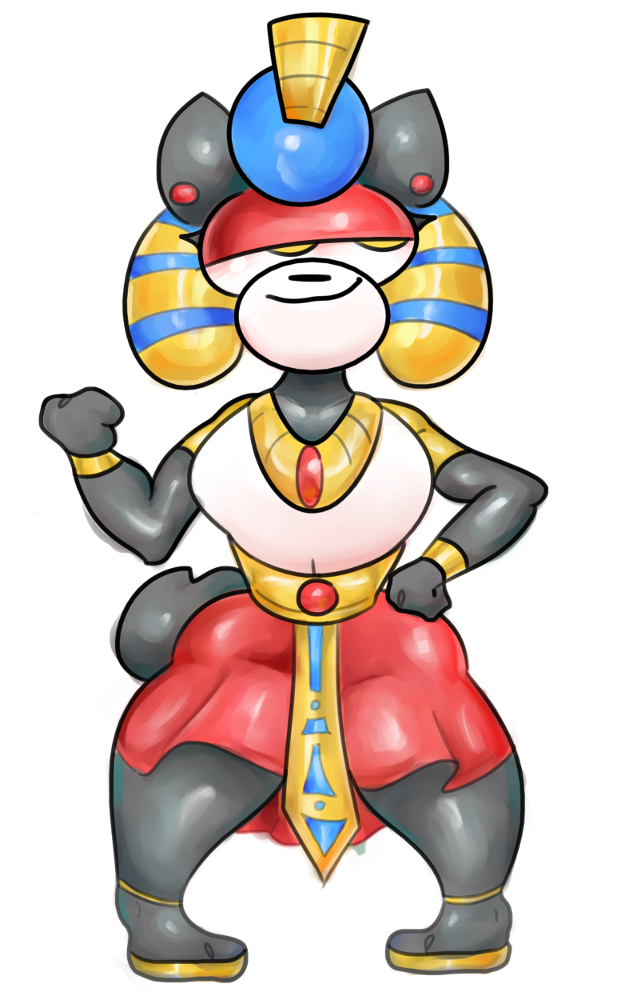

"These clerics value their ambitions over all else: both benevolent and tyrannical they for good or for ill, seek riches untold or provide for the common welfare; command by the hammer or by the guidance of the shield; seek to carve their name in the highest echelon of legend. Followers of the triumvirate of Re-Horakhty, Anubis, and Bast, these talented clerics of the Pharaoh subclass wield the light and the darkness and are said to hold the power of life and death in their hands." 
| Cleric Level | Spells |
|---|---|
| 1st | command, false life |
| 3rd | hold person, gentle repose |
| 5th | bestow curse, blinding smite |
| 7th | blight, sickening radiance |
| 9th | dawn, danse macabre |
When you choose this domain at 1st level, you gain the toll the dead cantrip if you don’t already know it. When you cast toll the dead on a creature while it's not already missing any hit points, it becomes charmed until the end of your next turn. You can use this feature a number of times equal to your Wisdom modifier (a minimum of once). You regain all expended uses when you finish a long rest.
Starting at 2nd level, you can use your Channel Divinity to trap an enemy in magical strands of tight, blinding light. As an action, you choose one hostile creature you can see within 30 feet of you. It must make a Constitution saving throw or become cursed until the end of your next turn. While cursed, the creature becomes wrapped up in a magical light force that transforms it into the shape of a tomb, becoming blinded and petrified for the duration.
Starting at 6th level, the Pharaoh's binding between both light and darkness strengthens. When you cast a spell of 1st level or higher that instantly deals radiant or necrotic damage to a creature, you may gain hit points equal to either the spell's level or half of your Constitution modifier.
At 8th level, you gain the ability to infuse your weapon strikes with your ancient power. Once on each of your turns when you hit a creature with a weapon attack, you can cause the attack to deal an extra 1d6 radiant or necrotic damage (your choice) to the target. When you reach 14th level, the extra damage increases to 2d6.
Starting at 17th level, when you use a spell to reduce a humanoid's hit points to 0, you can use a bonus action to force it to make a Constitution saving throw or be magically transformed into a mummy for one hour. The creature becomes charmed and its total hit points become equal to your cleric level. In addition, you take full control over the creature's actions and can mentally command one or more of these mummies at will, otherwise they stand idle. You can have a number of mummies to control equal to your Wisdom modifier (minimum of one) at once.